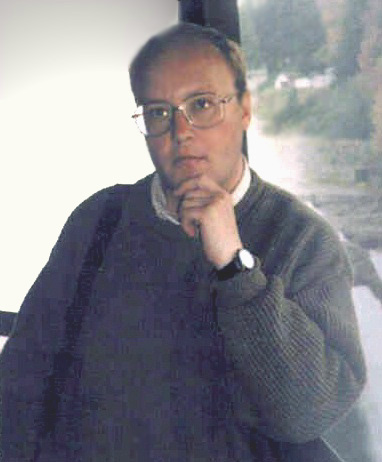

Михаил Константинович ЩЕРБАКОВ родился 27 марта 1963 года в г. Обнинске Калужской обл. Окончил филологический факультет Московского университета по отделению русского языка и литературы, где учился в 1982-1988 гг. Живет в Москве. Щербаков пишет песни с 1978 года, выступает с концертами.
Широкую известность его сочинения получили с конца 1980-х годов, когда Щербаков начал выступать перед публикой и были изданы первые сборники. Сейчас М. Щербаков по праву считается одним из первых бардов своего поколения. По утверждению Б. Жукова, журналиста, известного своими статьями об авторской песне, “другого настолько популярного человека, дебютировавшего в те же годы, нет”.
Написанием песен Щербаков занимается профессионально, в том смысле (помимо иных смыслов), что иной работы, кроме сочинительства, и иных источников дохода, кроме концертов и продажи дисков, кассет и сборников, у него нет.
Мнения о творчестве Щербакова можно услышать самые разные, от восторженных до резко отрицательных, как от широкой публики, так и от известных людей. Булат Окуджава, познакомившись с песнями Щербакова, отказался от своего более раннего высказывания об исчерпанности жанра авторской песни. (См. отрывок из интервью с Окуджавой, взятого в начале 1997 года). Весьма высокого мнения о сочинениях Щербакова придерживается Юлий Ким. Встречаются и негативные отзывы, в которых Щербакова обвиняют в отступничестве от идеалов КСП и разных иных идеалов.
Отзывы критиков и почитателей творчества Михаила Щербакова мы собираем на отдельной странице.
Сам Щербаков называет жанр, в котором он работает, просто песней, опуская определения “авторская” или “самодеятельная”. На вопрос о наиболее уважаемых им бардах неизменно отвечает: “Окуджава, Ким, Новелла Матвеева”. Из любимых поэтов называет Бродского, Мандельштама, обэриутов. Часто подчеркивает, что события, упоминаемые в его песнях, никаким образом не соотносятся с его личной биографией, в которой, как он однажды сказал, “особенных внешних событий […] не было, и надеюсь, что не будет”.
Статья о Михаиле Щербакове в Википедии.
Информация о концертах Щербакова находится на страничке “Новостей”. Эта информация обычно свежа и достоверна. Если нет, то читайте новости в сообществе ВКонтакте, Живом Журнале.
Щербаков регулярно дает концерты в Москве, менее регулярно в Петербурге, реже в других городах России. Выступает Щербаков либо один, либо с Михаилом Стародубцевым, который является его дуэтным партнером на протяжении многих лет. Он же (Стародубцев) играет на разнообразных музыкальных инструментах: вторая гитара, ф-но, синтезатор, флейта, ударные.
Иногда Щербаков выступает за границей, главным образом в США, Канаде, Израиле.
Были изданы следующие книги М. Щербакова:
- “Ковчег неутомимый”, 1е издание 1988, 2е (библиографическая редкость) - 1989, составитель И. Грызлов.
- “После Ковчега”, 1е издание 1992, 2е 1994, составитель И. Грызлов.
- “Вишневое варенье”, 1990, издание Московского Туристского Клуба, предисловие Ю. Кима, иллюстрации М. А. Кима (очень хорошие иллюстрации)
- “Нет и не было яда”, 1992, авторское издание.
- “Другая Жизнь”, 1997, изд-во “Аргус”. Включает 120 песен с нотами.
- Тринадцать дисков: Тексты песен, 2007, изд-во “Время” (автор, как он неоднократно отмечал на концертах, изданием недоволен, поскольку издательство не позаботилось о полном согласовании с ним текстов и других аспектов).
- Собрание песен Михаила Щербакова в четырёх томах (с нотами и аккордами и иллюстрациями) и отдельный сборник текстов песен 1981-2022. В полной мере сохренён не только композиторский замысел автора, но и зафиксированы значимые нюансы авторского исполнения своих произведений. Изд-во В. Палта. Самое полное и достоверное издание как с музыкальной, так и с лингвистической точки зрения.
Стихи Щербакова публиковались также в журналах “Знамя”, “Октябрь”, “Огонек”, “Иерусалимский журнал” и других. Около десяти песен вошло в “Антологию авторской песни” под редакцией Дмитрия Сухарева.
В 1995-2023 г. вышли в свет 26 компакт-дисков, аудио-сборник на 17 60-минутных кассетах, 4 диска с концертными записями. В том числе, в 2000-01 гг. были изданы кассеты и альбомы избранных песен разных лет (“Избранное” 1, 2) и лучших песен раннего периода (“Ковчег неутомимый” 1, 2).
Информация о том, где можно приобрести кассеты, компакт-диски и книги М.Щербакова.
Афиши некоторых прошедших концертов Щербакова и баннеры, изготовленные к его гастролям в разных странах.